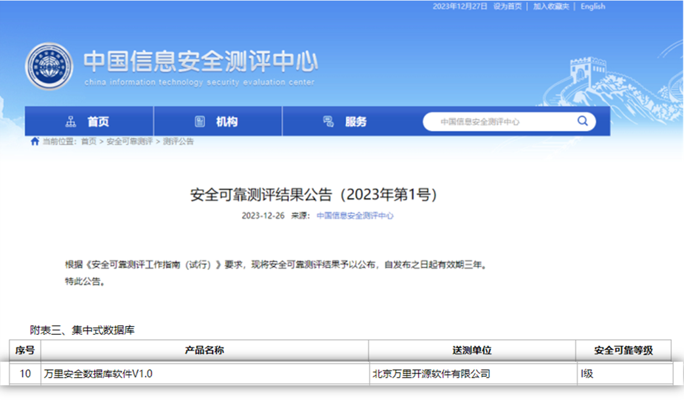

重磅 | 万里数据库首批通过安全可靠测评！
12月26日，中国信息安全测评中心、国家保密科技测评中心联合发布了《安全可靠测评结果公告（2023年第1号）》，暨首批安全可靠测评清单。
其中，万里安全数据库软件V1.0成功入选，安全可靠等级测评为Ⅰ级。

首批通过安全可靠测评
作为国内领先的数据库产品与服务提供商，万里数据库始终践行“极致稳定 极致性能 极致易用”产品研发理念，致力于提升数据库产品性能、稳定性、安全性和易用性。为满足用户需求，公司在20余年的研发创新与应用实践积淀中，打造出以安全数据库GreatDB为核心、行业领先的一站式数据库产品与解决方案，具备提供业务系统底层核心技术支撑的能力。
万里数据库首批通过中国信息安全测评中心、国家保密科技测评中心的安全可靠测评，标志着万里数据库在自主知识产权、供应链安全、自主研发实力和产品能力等方面能够满足各类用户对数据存储、管理、分析应用的严格要求。
关于安全可靠测评
安全可靠测评由中国信息安全测评中心组织，由企业自愿向中国信息安全测评中心、国家保密科技测评中心申请的产品检测。主要面向计算机终端和服务器搭载的中央处理器（CPU）、操作系统以及数据库等基础软硬件产品，通过对产品及其研发单位的核心技术、安全保障、持续发展等方面开展评估，评定产品的安全性和可持续性，实现对产品研发设计、生产制造、供应保障、售后维护等全生命周期安全可靠性的综合度量和客观评价。